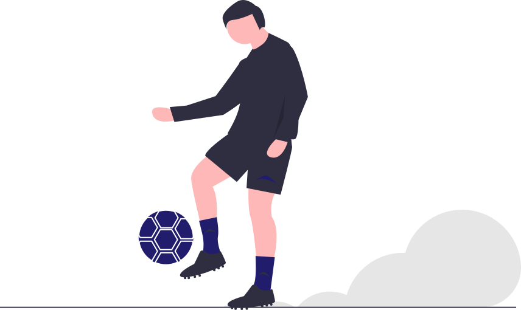
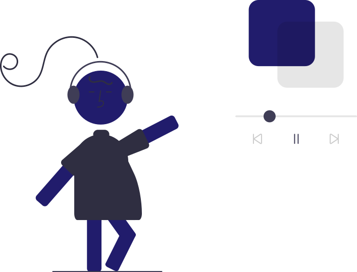
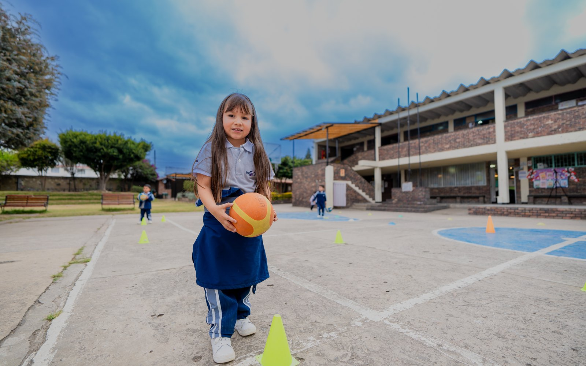
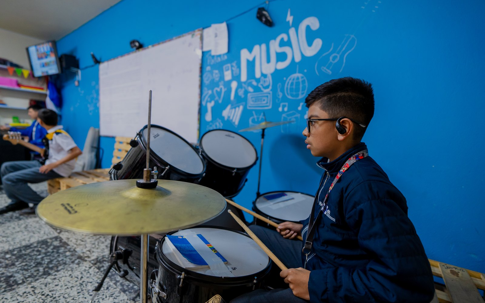
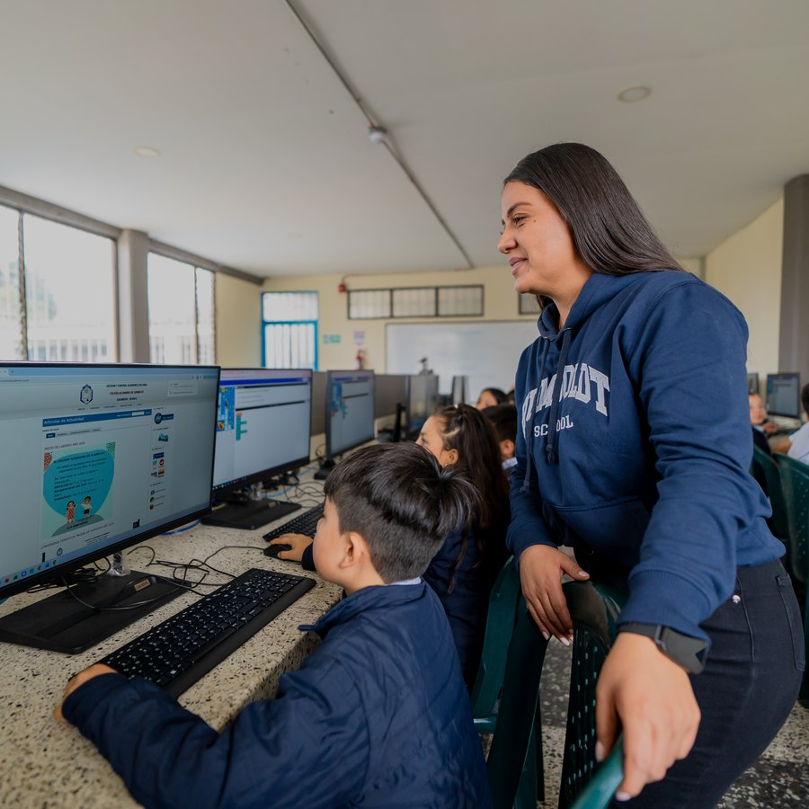
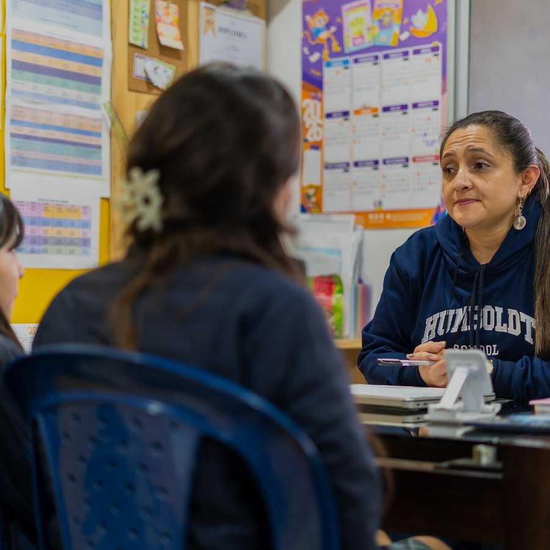
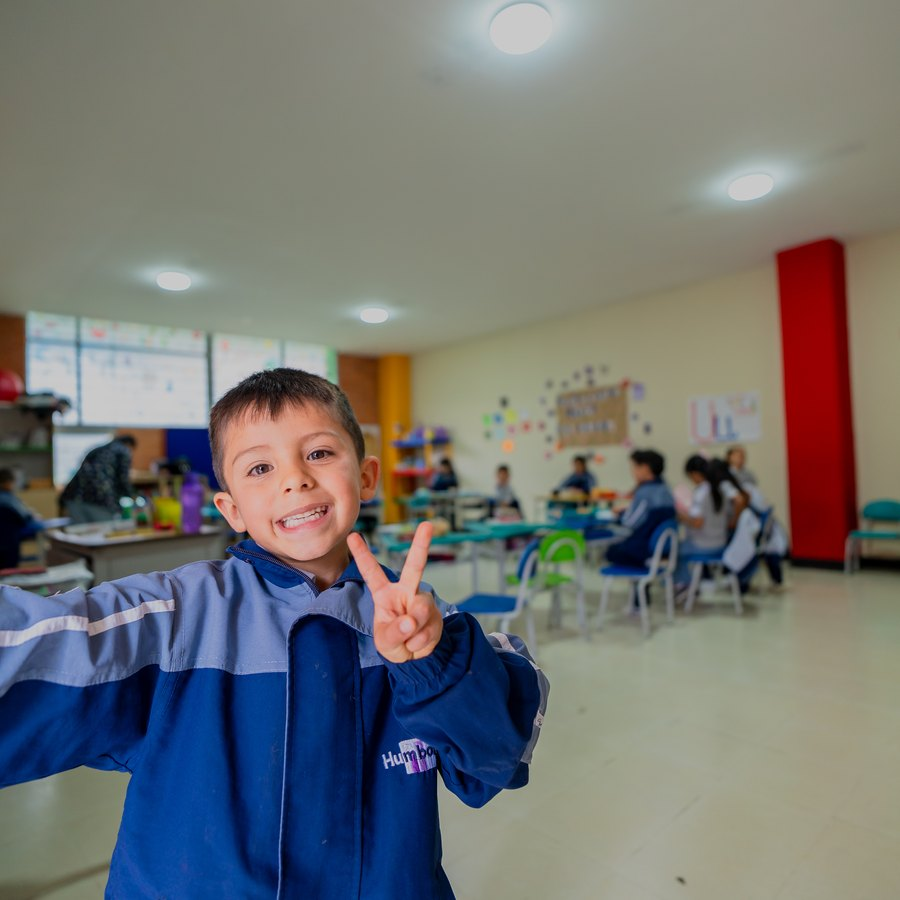
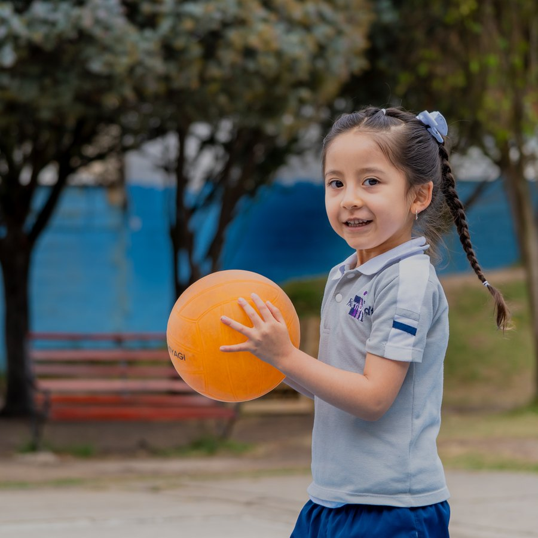

Aprender jugando
Exploran, construyen y se equivocan sin miedo. El juego es el método, no el recreo.

Valores que forman, conocimiento que transforma. Acompañamos a cada familia durante todo el proceso.

El eje de todo lo demás. Acompañamiento en el carácter, dentro de un ambiente escolar positivo.

Plan exigente y seguimiento personalizado. El colegio está entre los mejores de la ciudad en pruebas ICFES, y participa en Olimpiadas Matemáticas.

Laboratorios de Investigación y Desarrollo, robótica y tecnología. No solo estudian ciencia: la aplican.
Hay cupos disponibles en todos los niveles. Escríbenos por el que te interesa y te contamos requisitos, documentos y costos.
Exploración, lenguaje y desarrollo socioemocional.
Fundamentos académicos y primer contacto con los Laboratorios de Investigación y Desarrollo.
Profundización académica y proyectos de investigación en el colegio.
Preparación universitaria y liderazgo de proyectos de innovación.
Donde aprender también es una aventura
Exploran, construyen y se equivocan sin miedo. El juego es el método, no el recreo.

Equipos que compiten de verdad. Aprenden a ganar, a perder y a contar con el otro.

Piano, guitarra, batería y canto en un salón hecho para eso. Aquí descubren su talento.

Encuentros, celebraciones y actividades lúdicas. Cambia de forma según lo que toque ese día.

Instrumentos de verdad al alcance de los niños, con acompañamiento para empezar.
Correr, crear, hacer amigos y descubrir de qué es capaz. Eso también se aprende.
Química, robótica y tecnología con un método de investigación detrás. Los estudiantes formulan un problema, construyen una solución y la sustentan.
Pruebas ICFES, Olimpiadas Matemáticas y seis disciplinas deportivas








Se compra el formulario, que tiene dos partes: una la diligencia el acudiente y otra el colegio actual del estudiante. Con un costo de $75.000.
Valida que los estudios cursados correspondan al grado al que el estudiante aspira ingresar.
Una entrevista con Psicoorientación del colegio.
Las lúdicas se manejan dos o tres días a la semana y no son de carácter obligatorio.
Grados 9°, 10° y 11°: el ingreso a estos grados tiene requisitos y condiciones específicas. Consúltalos con admisiones antes de iniciar el proceso.
Lo más rápido es WhatsApp. Fuera de horario, déjanos tus datos y te contactamos apenas abramos.
EscríbenosLos valores de matrícula y pensión los regula la Secretaría de Educación, y el colegio los publica una vez quedan definidos para el año escolar. El formulario de inscripción sí tiene un costo fijo de $75.000. Escríbenos y te confirmamos los valores vigentes.
Sí. Hay cupos disponibles desde Prejardín hasta grado 11. Escríbenos por el grado que te interesa y te confirmamos la disponibilidad al día.
[ ... ] Detallar los requisitos y condiciones específicas de estos tres grados.
El formulario de inscripción, que se compra en el colegio. Tiene dos partes: una la diligencia el acudiente y la otra el colegio donde el estudiante cursa actualmente. Después siguen la prueba de admisión y la entrevista con Psicoorientación.
Preescolar de 7:15 a.m. a 12:45 p.m., básica primaria de 6:45 a.m. a 12:45 p.m., y básica secundaria y media vocacional de 6:15 a.m. a 1:30 p.m. Las lúdicas son dos o tres días por semana y no son obligatorias.
[ ... ] Confirmar la política del colegio sobre ingresos a mitad de año.